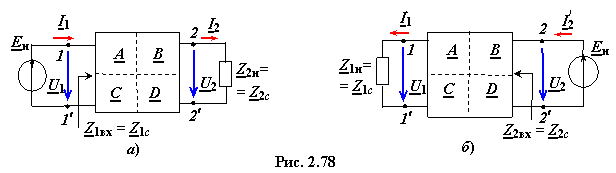
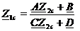
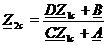
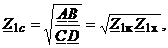
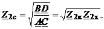

К характеристическим параметрам ЧП относят два характеристических сопротивления Z1с и Z2с и постоянную передачи Г. Симметричный ЧП имеет только одно характеристическое сопротивление Zс и постоянную передачи Г.

Х а р а к т е р и с т и ч е с к и е с о п р о т и в л е н и я. Если положить входные сопротивления Z1вх = Z1с, когда Z2н = Z2с, и Z2вх = Z2с, когда Z1н = Z1с (рис. 2.78), то получим два сопротивления
 и 
несимметричного ЧП, называеых характеристическими.
Совместное решение уравнений относительно величин Z1с и Z2с даёт:
 (2.132)
Для симметричного ЧП (А
= D, Z1вх = Z2вх) режим согласованной нагрузки имеет место при сопротивлении
Z2н = Z2вх = Zс
, (2.133)
а при Zи = Z1вх = Zс обеспечивается условие согласования внутреннего сопротивления источника сигнала Zи с ЧП.
При этом напряжение на входе ЧП U1 = Eи / 2, а ток I1 = Eи / (2Z1вх) = Eи / (2Zс).
При этом напряжение на входе ЧП U1 = Eи / 2, а ток I1 = Eи / (2Z1вх) = Eи / (2Zс).
Максимальную активную мощность в нагрузке получают при Zи = Z1вх = Zс = Rн, т. е. при чисто активных сопротивлениях источника, четырёхполюсника и нагрузки. Четырёхполюсник считается согласованным с источником сигнала, если его комплексное входное сопротивление Z1вх равно внутреннему комплексному сопротивлению источника энергии Zи.